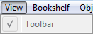

> Learning the Graphical User Interface (GUI) >
The Menu Bar >
View Menu
3.2.2. View Menu
The following shows the open View menu and explains its features.

The View menu consist of the following single command:
-
Toolbar
This command is permanently enabled and cannot be accessed from the View menu.